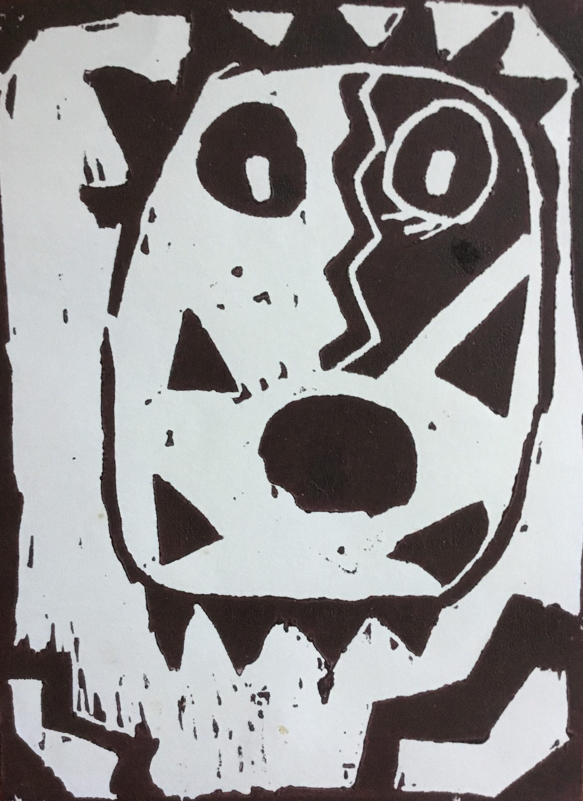
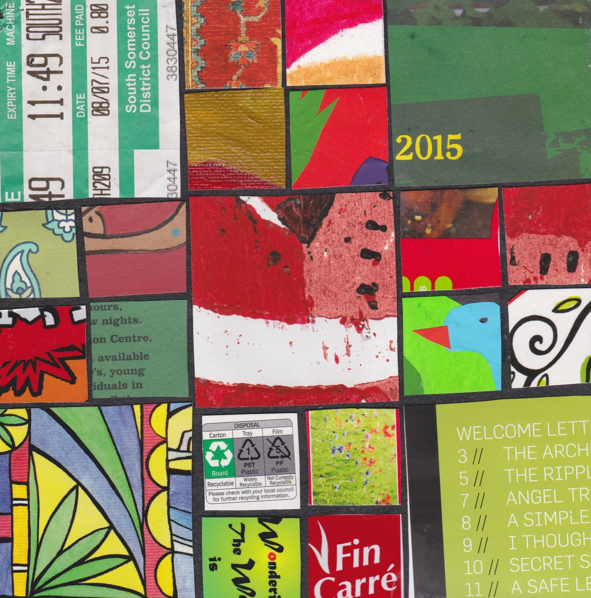
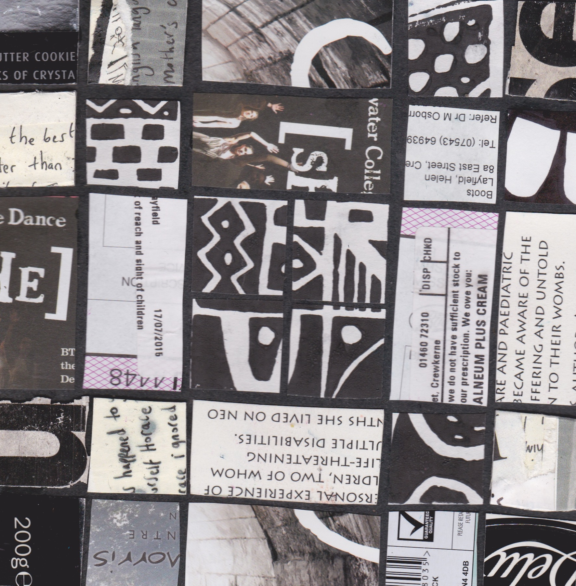

I HAVE COME TO LEARN THE TRANQUILLITY OF IMPERFECTION THROUGH THE SIMPLICITY OF HAND STITCHING.
IN EACH STITCH THERE IS A SPACE OF ACCEPTANCE THERE IS NO JUDGEMENT.

I was born in Nakuru Kenya, in the beautiful Rift Valley and the lake with millions of pink flamingos. When I was six months old my parents moved to Western Kenya, not far from Lake Victoria, a landscape of rolling hills, patched with farming and small holdings.
I was one of those children that when asked what I wanted to be my answer was always an artist. I moved to London and at 21 started my BA in Illustrative arts at the City and Guilds of London Art School. I fell in love with relief printmaking specialising in lino printing and woodcuts. I was heavily influenced by The German expressionist printmakers and South African born John Mufangejo.
From rural Western Kenya to London was exciting and creatively stimulating, however ten years was enough and I moved to rural Derbyshire.

At Chesterfield College I completed Further and Adult Education training and began working as a community artist. I worked with a variety of community groups, the WEA and Nottingham and Sheffield University Community Education programs. I have now been a community artist for 30 years. Initially specialising in relief printmaking, I moved on to working with drawing, painting and mixed media.
In 2015 I had wanderlust and a hankering to do an MA. The Cyprus College of Art at Lempa Village really appealed to me. Set up by Stass Praskas as a studio space for artists, I did my Post Graduate Diploma there, moving on to Plymouth College of Art where I completed my MA in Creative practice.
I took up textile work full time 6 years ago .I now work exclusively with fabrics and hand stitching making quilts and figurative textiles.
My present work is a fusion of aesthetics and processes that incorporate my childhood in Africa, my family heritage and an interest in global hand stitching.
Seven years ago I was diagnosed with CFS / ME. I also have dyslexia and ADHD .Identifying as an artist with a disability has both restricted me and freed me. I have accepted there are things I can not do. I have, however found a freedom and authenticity that I never had before. The quilts and figurative textiles are a many layered narrative of who I am.

I am now an MFA student at Arts University Plymouth. My research and workshop development is specifically centred around democratic learning and inclusivity through online learning and social media.
The research which I implement through my courses incorporates historical, geographical and social contextualisation that bridges traditional indigenous processes and contemporary sloppy craft. My primary aim is an exploration of personal narrative and identity.
I find the philosophies of the hand made, the imperfect, the slow movement and a non judgemental, non achievement led approach allows for an organic contemplation and development.
My influences include Sidi and Gees bend quilters, big stitch and visible stitching processes, The Yarrenty soft sculpture artists, Judith Scott, Louise Bourgeois, Sheila Hicks, raw art, outsider art, children’s art, Indigenous textile art dolls, folk art.